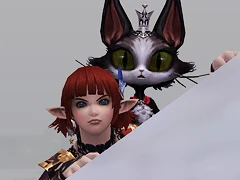
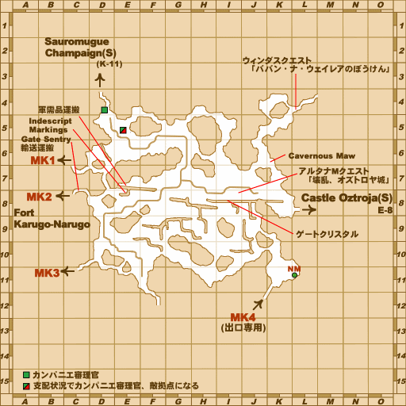
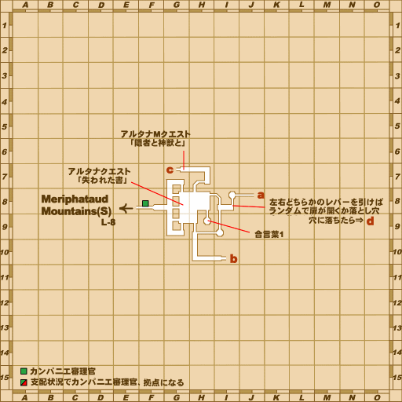
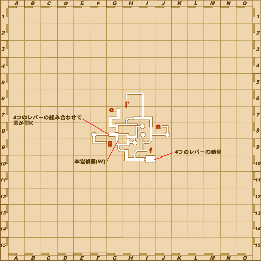
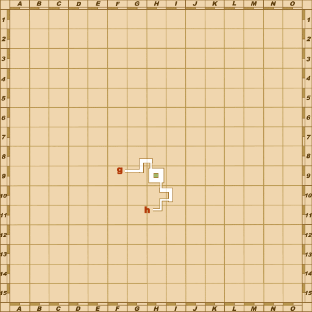
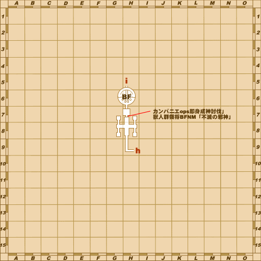
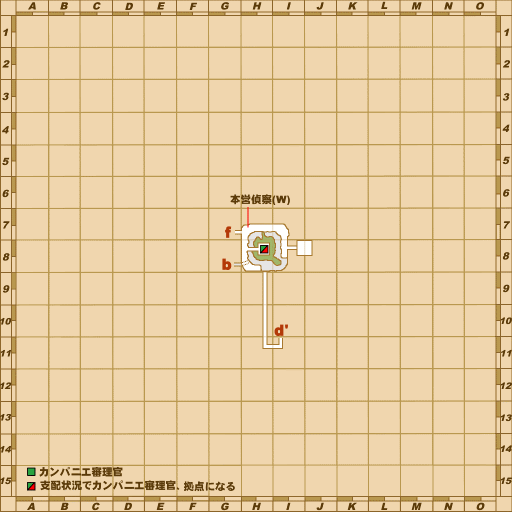
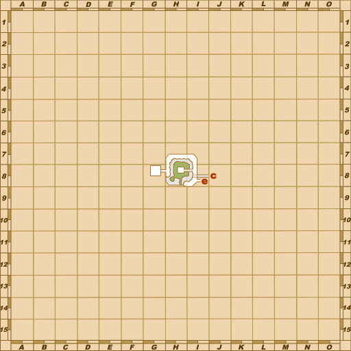

Before you begin
- Complete Manifest Destiny.
Starting point
Mithran Bivouac · Meriphataud Mountains [S] · I-8
People in this mission


Walkthrough
- Examine the Mithran Bivouac at northeast I-8 for another Poet god’s key.
- Return to the top of Castle Oztroja [S] using the same route as Manifest Destiny. Light a torch, pass the Brass Door, and examine the Collapsing Floor for the scene and battlefield entry.
- Defeat the opponent as it changes between Fenrir, Karaha-Baruha and Robel-Akbel. Keep your assisting NPC, Lehko Habhoka, alive throughout.
- After victory, examine the Mithran Bivouac for a scene, then speak to Dhea Prandoleh in Windurst Waters [S] (H-10).
- Examine the Sealed Entrance in West Sarutabaruta [S] (F-10/F-11 boundary). Enter Windurst Waters [S] for the final scene and reward.
Battle and progress notes
- After a failed battle, return to the Mithran Bivouac for a replacement Poet god’s key.
Completion and reward
Zodiac Ring; Star of the Azure Sky title.
What this opens
- Windurst route prerequisite for continuing Adieu, Lilisette.
- Windurst [S] national story complete.
Area maps
Open a zone below, then select a map to enlarge it. Match the named floors and grid coordinates in the steps; these are reference area maps, not a live position tracker.
Meriphataud Mountains (S)


Castle Oztroja (S)












Windurst Waters (S)


West Sarutabaruta (S)

Zone guides
References
- BG Wiki — At Journey's End
- FFXIclopedia — At Journey's End
- Reviewed mission implementation
- Reviewed mission implementation
- Reviewed mission implementation
- Reviewed mission implementation
- Reviewed mission implementation
Steps are an original summary of the linked walkthrough and reviewed source. Other servers’ bonus rewards are not included. How to read requirements, waits and battlefield notes.